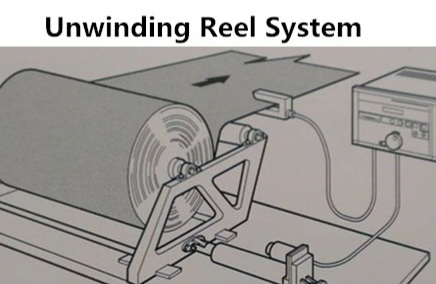
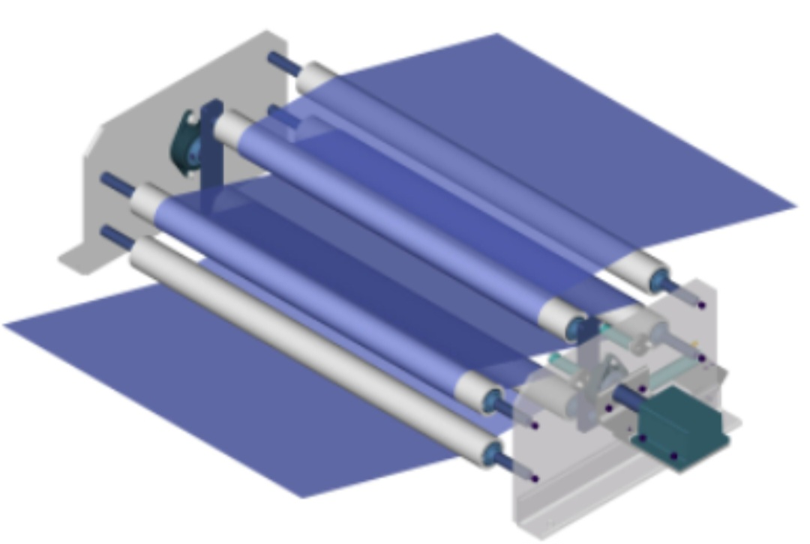
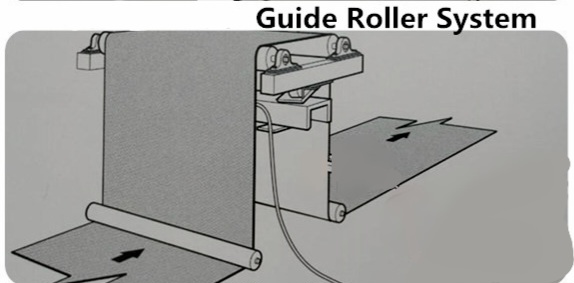
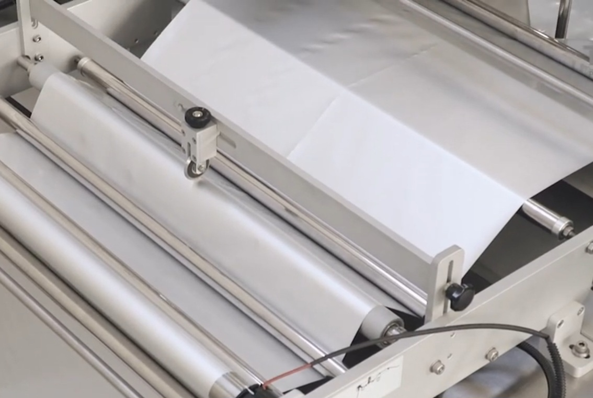
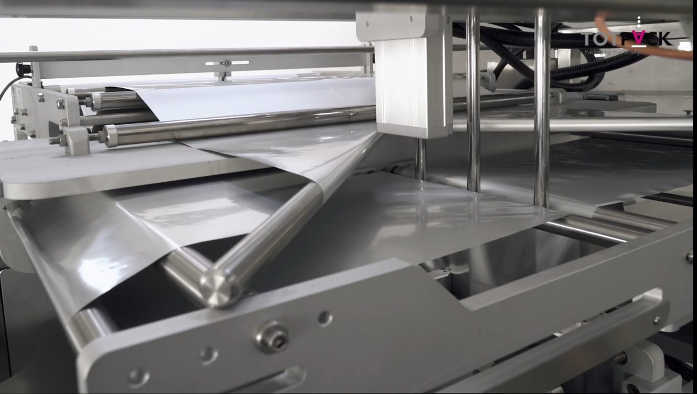
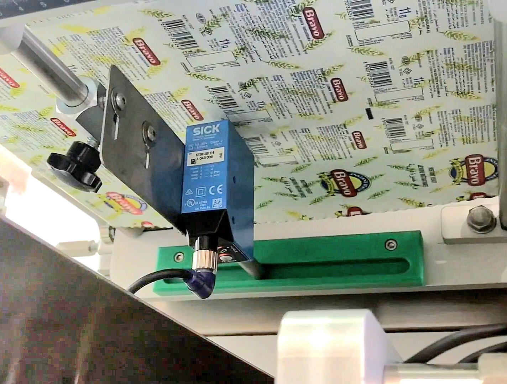
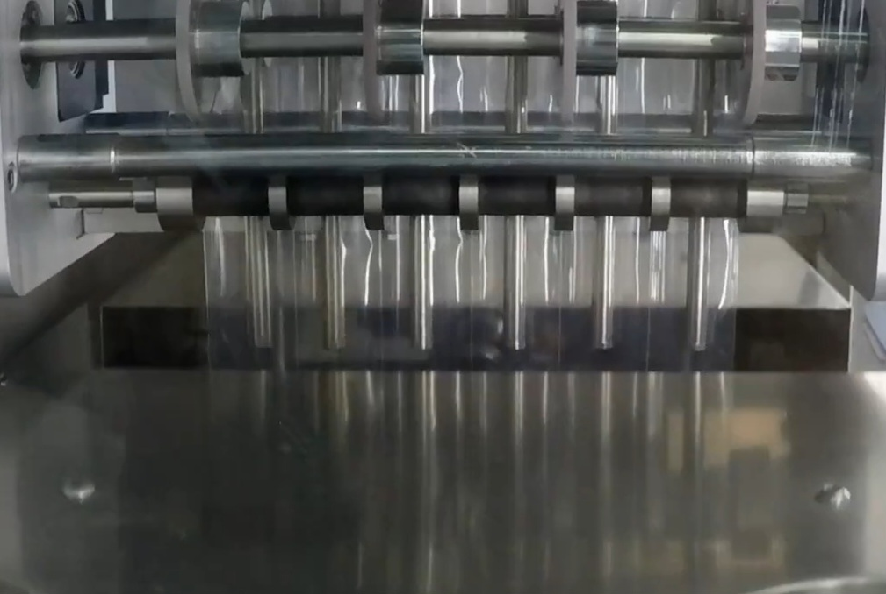
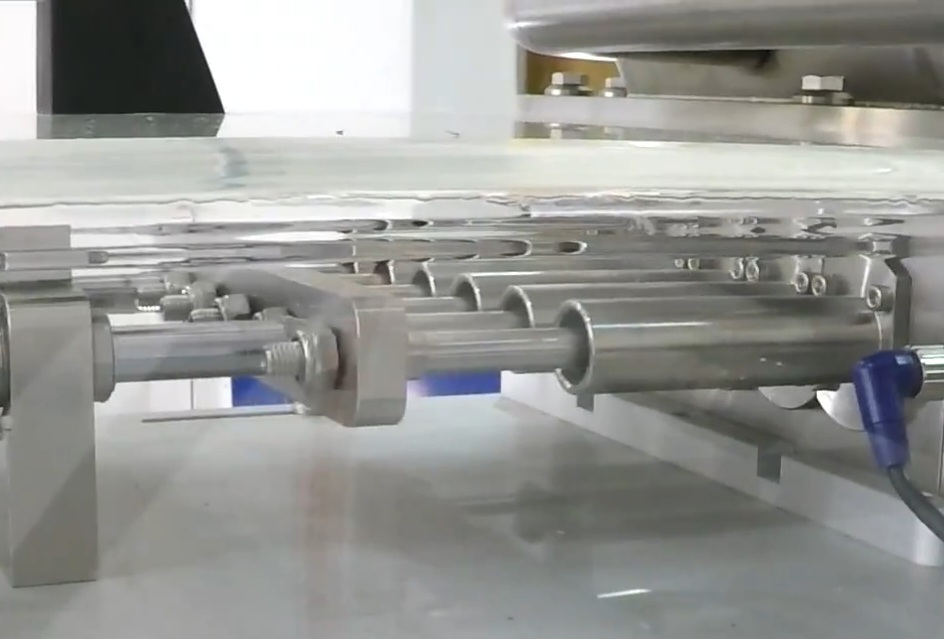

بسم الله الرحمن الرحيم
Preliminary Feasibility Study
Multi-Lane Packaging Machine Project
Graduation Project for Mechatronics Department Students
Dhamar University
VFFS MULTI-LANE MACHINE
Table of Contents
1. Project Introduction
With the significant expansion in industries and machinery, and the increasing demand for fast and accurate packaging solutions, packaging technologies have become a fundamental factor in improving product quality, reducing waste, and increasing production efficiency. One of the most prominent packaging methods is the Stick Pack packaging used for filling small quantities of liquids or powders in a practical and economical way. Despite the availability of this technology in the market, most automated packaging lines rely on expensive imported machines or manual packaging, leading to limited efficiency or productivity in traditional single-lane machines, with a scarcity of locally manufactured multi-lane machines.
Note to investors and funding bodies:
This document is a preliminary feasibility study prepared to assess technical and market viability. Upon positive interest or institutional approval we will carry out a full detailed feasibility study: on-site visits, field surveys, accurate cost estimates, supplier quotations, and prototype testing will be completed and attached to the full study.
Tomato value-chain observations & Annual import bill:
Recent sector discussions point to seasonal oversupply of tomatoes with insufficient downstream processing and packaging capacity. For example, reports have cited an estimated 160–170 tons of processed tomato stock remaining in storage at a processing complex (Bajel) and not fully dispatched, In addition, Yemen costs more than $40 million annually to import tomato paste and ketchup from abroad, despite the fact that our country has enough basic requirements that might exempt us from this import bill. This highlights gaps in post-harvest logistics, packaging, and market linkages that localized packaging solutions—such as the proposed multi-lane VFFS machine—can help address.
1.1 Project Idea
The project aims to design and manufacture a prototype of an automated multi-lane packaging machine (Multi-Lane) for filling products (liquids or powders) and packaging them in small packages (stick packs). The machine relies on mechanical and pneumatic systems to control film movement, sealing, and filling, in addition to an automated control system using PLC, HMI touch screen, and IoT system for easy control and monitoring of the project from anywhere in the world. To solve the problem of manual packaging or slow and inefficient automated packaging, by creating a high-capacity machine that works on multiple synchronized lanes, doubling production quantity and saving time, while ensuring filling accuracy and sealing quality.
1.2 Problem Addressed by the Project
Local factories, especially small and medium-sized ones, face several challenges in packaging operations:
- Low productivity due to reliance on single-lane machines or manual packaging
- High operating costs due to time and raw material consumption
- Inability to compete with imported products due to high costs
- Reducing reliance on imports and encouraging local manufacturing
1.3 Project Objectives
Technical Objectives
- Design a 3 parallel lane machine to increase productivity
- Achieve filling accuracy with an error rate of ±1%
- Automated control system PLC + HMI
- Design according to industry standards using stainless steel materials
Production Objectives
- Diversify products (liquids and powders)
- Production speed of 90-200 packages/minute compared to 30-40 in single-lane machines
- Save 30-60% of packaging time compared to traditional methods
- Reduce raw material waste due to high filling accuracy
Marketing Objectives
- Provide a machine at 40-50% lower cost than imported machines
- Local manufacturing provides a high-efficiency machine that competes with imports at a lower price
- Reduce reliance on imports and encourage local manufacturing
- Enable small factories to compete with high-quality products
Educational Objectives
- Apply knowledge in motion mechanics, electromechanics, and automated control
- Master 3D modeling and design software
- Develop a programmable logic control system
- Selection and integration of sensors and actuators
- Prepare technical, market, financial, and operational studies
- Project management and professional documentation
- Risk analysis and quality assurance
1.4 Project Importance
Economic Importance
- Optimal exploitation of our natural resources by activating the manufacturing industry
- Provide a low-cost local alternative to imported machines
- Increase productivity through multi-lane packaging (3-6 lanes working simultaneously)
- Reduce reliance on costly and imprecise manual labor
- Enable small factories to compete with high-quality products
- Encourage investors to enter the packaging machine manufacturing field
Industrial & Environmental Importance
- Meet the needs of factories that rely on Stick Pack packaging
- Ensure packaging quality, tight sealing, precise product distribution
- Provide spare parts locally, facilitating maintenance and reducing costs
- Improve the efficiency of local factories
- Reduce waste from imprecise manual packaging
- Possibility of using environmentally friendly packaging materials
- Reduce the amount of plastic used
Social Importance
- Meet society's need for small packages suitable for daily individual consumption
- Provide diverse packaging options that meet the needs of low-income families
- Provide products that are easy to open and use for children and the elderly
- Reducing the national import bill
- Promote a culture of smart consumption by reducing food waste
- Create job opportunities by providing technical jobs in manufacturing, operation and machine maintenance
2. Technical Project Description
Packaging Machine Components
The machine consists of a filling system and a packaging system,In addition to the control and monitoring system, each containing several basic components that work together to complete the filling and packaging process.
2.1 Packaging System Components
2.1.1 Film Roll Unwind Unit
A shaft that carries the film roll with a brake system for tension control and an end-of-roll sensor
Individual Working Principle:
Provides raw film continuously with appropriate tension, with early warning when material runs out
Working Principle in Machine:
Provides the following stages with a film strip optimally tensioned, ensuring smooth filling and packaging process
2.1.2 Dancer Roller Unit
A moving arm that absorbs sudden changes in film tension
Individual Working Principle:
Acts as a film insulator to absorb shocks resulting from changes in film pulling speed
Working Principle in Machine:
Ensures the film reaches filling and sealing stages with ideal tension that directly affects package size accuracy and sealing quality
2.1.3 Registration & Guide Unit
Guide rollers with servo motor and optical sensor to read registration mark
Individual Working Principle:
- • Sensor captures registration mark on film
- • Activates index motor to pull film away from registration mark
- • Returns load to standby position
Working Principle in Machine:
Ensures film advances precisely according to required distances for each printing, cutting or folding operation
2.1.4 Slitting Unit
Cutting wheel to slit film longitudinally into two equal strips
Individual Working Principle:
Cut film longitudinally without tearing
Working Principle in Machine:
Secures preparation of two film strips for folding stage and entry of filling tubes
2.1.5 Folding Unit
Set of rollers drawing a path similar to letter "V" to fold film
Individual Working Principle:
- • Divide film into two identical wrinkle-free layers
- • Maintain their balance and alignment
Working Principle in Machine:
Ensures both layers reach in front of filling heads simultaneously and with required accuracy
2.1.6 Printing & Registration Unit
Smart printing system that prints product data in real time
Individual Working Principle:
- • Sensor captures registration mark and sends signal to PLC
- • Activates printer to print data at the right moment synchronized with sensor signal
Working Principle in Machine:
Ensures synchronized printing at specified location before filling and sealing stage
2.1.7 Vertical Sealing Unit

3 pairs of heating plates to create tight longitudinal seal
Individual Working Principle:
Apply heat and pressure to create tight longitudinal seal along formed film
Working Principle in Machine:
After slitting film and placing it over each other, this unit seals longitudinal edges of film forming a tube closed from sides ready for filling
2.1.8 Pulling Unit
Pair of rubber rollers to pull film vertically downward
Individual Working Principle:
Pulls film downward precisely to ensure required package length
Working Principle in Machine:
These rollers ensure smooth and steady film advancement through filling and sealing stages, directly affecting package size accuracy and sealing quality
2.1.9 Horizontal Sealing Unit

Pair of movable heating plates to create horizontal seal
Individual Working Principle:
Creates tight transverse link isolating packages from each other
Working Principle in Machine:
Packages are closed from top after filling, and next packages are prepared for closing from bottom, isolating filled packages from each other
2.1.10 Cutting Unit

Sharp knife separates filled packages from continuous film roll
Individual Working Principle:
Separates filled packages cleanly and precisely
Working Principle in Machine:
Ensures separation of packages individually after completion of filling and sealing process
2.1.11 Outfeed Conveyor Unit

Conveyor belt receives filled and cut packages
Individual Working Principle:
Transports finished products away from work area
Working Principle in Machine:
Ensures continuity of production flow and prevents accumulation of packages at machine outlet
2.2 Filling System Components
2.2.1 Supply Tank

Large conical stainless steel vessel for liquid storage
Individual Working Principle:
Acts as temporary liquid reservoir, ensures continuous and regular supply to filling unit
Working Principle in Machine:
Ensures sufficient liquid availability for continuous filling, prevents interruption of product flow to system
2.2.2 Linear Servo Motor

Electric motor providing precise and controlled linear motion
Individual Working Principle:
Converts electrical energy to direct linear motion without need for intermediate mechanical components
Working Principle in Machine:
Controls movement of cylinders and filling tubes, allowing measurement of very precise liquid quantities
2.2.3 Piston Cylinders
Precise metal cylinders with moving pistons inside
Individual Working Principle:
When piston is pulled back inside cylinder, liquid is drawn from supply tank through suction valve
Working Principle in Machine:
Works in coordination with servo motors to measure exact volume of liquid filled in each package
2.2.4 Liquid Manifold

Piece distributing liquid from main pump to filling tubes
Individual Working Principle:
Acts as collection and distribution center, receives liquid from one or more sources and divides it into multiple paths
Working Principle in Machine:
Ensures each filling line gets same liquid quantity at same time
2.2.5 Filling Nozzles

Stainless steel tubes for delivering liquid inside packages
Individual Working Principle:
Direct liquid precisely to packages, with design that reduces foam or liquid splashing during filling
Working Principle in Machine:
Inserted between sealed film layers before horizontal sealing operation
2.3 Control & Monitoring System Components
2.3.1 Sensors

Proximity sensors, registration mark, liquid level, and temperature sensors
Benefits in Machine:
Act as "eyes" and "ears" of machine, provide control system with continuous data about machine status
2.3.2 Control System

PLC + HMI + IoT for automated control and remote monitoring
2.3.3 Motors

Servo and stepper motors to move various components
2.3.4 Pneumatic System

Air cylinders and valves for motion control and closing
2.4 Workflow Stages in Brief
Unwind film roll and guide it through tension exclusion system
Form package via film slitting, folding and vertical edge sealing
Horizontal sealing while simultaneously filling by pumping liquid from supply tank to filling nozzles
Cutting to separate filled packages
Product output via conveyor belt
2.5 Types of Liquids That Can Be Filled
The machine can handle a wide range of liquid products according to the filling system used:
Low Viscosity Liquids
- • Water and juices
- • Milk and light oils
- • Carbonated drinks
Medium Viscosity Liquids
- • Light sauces
- • Shampoo and liquid detergents
- • Liquid pharmaceutical preparations
High Viscosity Liquids
- • Ketchup and mayonnaise
- • Yogurt and honey
- • Liquid chocolate and toothpaste
3. Market Study
This study aims to analyze the Yemeni market's need for liquid filling machines, estimate potential demand, evaluate competition, and explore success opportunities.
3.1 Target Audience
Based on data from the Yemeni Federation of Chambers of Commerce and Industry and regional industrial federations:
- • There are more than 33,000 industrial establishments operating in Yemen
- • Industries represent 47% of GDP
- • Many are concentrated in food and beverage processing sector
- • In major cities:
- - Juice and beverage shops (daily packaging 100-250 ml): Sana'a (250 shops), Taiz (180 shops), Aden (150 shops)
- - Water, detergent and essential oil packaging workshops: Ibb (70 establishments), Hodeidah (50 establishments), Dhamar (40 establishments)
- - Small home projects (honey, rose water, essential oils)
Geographic Distribution of Target Establishments
3.2 Expected Demand Volume
| Governorate | Estimated Establishments | Penetration Rate | Expected Machines |
|---|---|---|---|
| Sana'a | 250 | 2% | 5 |
| Taiz | 180 | 2% | 4 |
| Aden | 150 | 2% | 3 |
| Ibb | 70 | 2% | 1 |
| Hodeidah | 50 | 2% | 1 |
| Dhamar | 40 | 2% | 1 |
| Total | 740 | — | 15 |
Expected Demand by Governorate
3.3 Market Competitors
Local
- • Artisanal workshops producing manual machines
- • Price: $100-200
- • Lack automation and precision
Imported
- • Multi-lane VFFS machines
- • Price: $12,000-20,000 before customs
- • Reach $16,000-28,000 after fees
Our Competitive Advantage
- • Proposed selling price: $6,000-7,000
- • Immediate local technical support
- • Custom design for local market
Competitive Price Comparison
3.4 Project Opportunities
Economic Opportunities
- • Local manufacturing cost: $5,000-6,000
- • Selling at price saving customer 60-75%
- • Fast after-sales service
Market Opportunities
- • Peak seasons: Ramadan, summer, holidays
- • Partnerships with chambers of commerce
- • Focus on major cities
3.5 Summary & Recommendations
• The Yemeni market has a real need for automated packaging machines
• We aim to sell 15 machines in the first year focusing on major cities
• Partnership with Federation of Chambers of Commerce and industrial unions is recommended
• Possibility of expanding market to neighboring countries in the future
4. Technical Study
4.1 Selecting the Controller Type (PLC)
This project requires using a Programmable Logic Controller (PLC) to execute the automatic operation sequence for the liquid filling machine.
The controller must meet the following specifications and requirements:
Functional Requirements:
- •Number of Digital Inputs: At least 8 inputs for connecting various sensors (color mark sensor, photoelectric sensor, inductive sensor, roll presence sensor).
- •Number of Digital Outputs: At least 14 outputs for controlling actuators like pull motors, welding relays, and filling valves.
- • Analog Input Support: At least 4 inputs for temperature sensors (RTD or Thermocouple via signal converter).
- • Expandability: The unit should allow adding expansion modules in the future if needed.
- • Industrial Communication Support: Such as Ethernet or industrial protocol (PROFINET or Modbus) for connecting to HMI or SCADA systems.
- • Cloud Connectivity Support: To enable remote monitoring and operation via web interface or dedicated app, if desired by the organization in the future.
PLC Unit Required Tasks:
- • Execute automatic sequence for machine operation stages (welding - filling - pulling).
- • Read sensor signals accurately and ensure synchronization between mechanical units.
- • Control timing between operations to prevent interference or sudden stops.
- • Issue alerts in case of malfunctions or roll depletion.
- • Integrate with HMI operation screen for real-time status display and manual/automatic control.
4.2 Control System Description
The control system relies on a PLC controller to execute the automatic sequence for package forming and filling stages:
- • Forming a tube from plastic film via forming collar, then sealing side edges through longitudinal sealing unit
- • Closing the first package base using transverse sealing jaws
- • Pumping liquid into the package via filling tube
- • Pulling the film one row at a time using pull system (motor or rollers)
- • Closing the previous package head and forming the new package base simultaneously during transverse sealing
- • Repeating the cycle (sealing - filling - pulling) automatically with precise synchronization
- • Using optical sensor to read marks printed on film and determine stopping point accurately
- • The timing sequence between these stages is precisely controlled by internal PLC program
4.3 Operation and Control Screen (HMI)
General Requirements:
- • Touch panel operation and control screen.
- • Screen size of at least 7 inches for clear operator view.
- • Suitable display resolution (at least 800×480 pixels) for clear data and graphics display.
- • Support for Ethernet/industrial protocol (like PROFINET or Modbus) for integration with PLC unit.
- • Capability to create interactive interfaces using standard programming software (like TIA Portal or equivalent).
Support for the Following Elements:
- • Real-time display of sensor and actuator status.
- • Manual control buttons (start/stop).
- • Alerts and error messages in case of malfunctions.
- • Capability to display graphics or charts when needed.
HMI Required Tasks:
- • Easily start and stop machine operation.
- • Monitor industrial process and display all important data for operator.
- • Issue clear alerts when system malfunctions or stops.
- • Provide user-friendly, multilingual interface to reduce human errors and speed up operation.
4.4 Used Sensors
Color Mark Sensor
- • Type: Color Mark Sensor – Reflective Type
- • Manufacturer: Such as SICK, Panasonic, or Keyence
- • Function: Detect black color marks printed on bag surface to precisely determine cutting or filling point.
- • Operation Mechanism: Uses LED light (usually red or white) to detect color contrast between black mark and bag background.
Inductive Proximity Sensor
- • Function: Ensure the liquid pulling piston reaches its end position accurately, i.e., at maximum filling point.
- • Location: Installed at machine top, beside moving piston for pulling/pushing operation.
Thermal Sensor (Thermocouple)
- • Type: K-Type Thermocouple Probe for sealing machine
- • Function: Measure sealing jaws temperature to ensure proper heat during operation.
- • Or can use RTD for example PT100 RTD Probe
- • We prefer using RTD sensor instead of Thermocouple because it's easier to connect with PLC unit, provides stable linear signal without needing cold junction compensation, and offers good accuracy in required temperature range (up to 300°C).
Photoelectric Sensor for Roll Detection
- • Name: Focused photoelectric beam sensor
- • Type: Reflective photoelectric sensor e.g. SICK WTB4-3P1361
- • Actual detection distance: Ranges between 30 to 80 mm depending on installation location
- • Function: Verify presence of plastic bag roll before starting operation, stop system if roll is depleted to prevent incorrect or damaged operation.
5. Operational Study
5.1 Operation Mechanism
System Startup
- • Power on
- • Start system from control panel or HMI screen
- • Ensure settings appear correctly
- • Adjust timers and pump quantities as required
Trial Operation
- • Test film movement and empty filling for 3-5 minutes
- • Monitor work regularity and absence of errors
- • Correct any malfunctions before running actual product
Documentation & Follow-up
- • Record number of pieces produced daily
- • Document any malfunction or stop occurred during operation
- • Check maintenance log when recurring problem occurs
5.2 Operation Requirements
Electrical Power
- • Ensure availability of stable power source (220-380 volts depending on machine type)
- • Check all electrical connections daily
Air Pressure
- • Ensure air pressure between 5-6 bar
- • Check leaks in pipes or connections
- • Clean air filter regularly
Packaging Materials
- • Ensure roll is installed correctly and securely
- • Check film for reference mark (Eye Mark)
- • Ensure film is pulled smoothly without slipping or twisting
Cleaning Contact Parts
- • Clean filling pumps, tubes and knives daily
- • Do not leave food or liquid residues on moving parts
- • Use non-corrosive cleaning materials
Sensor Check
- • Test Eye Mark sensor operation before starting
- • Ensure sensor surface is clean and dust-free
- • Check limit switches at drive motor or stop positions
5.3 Required Workers & Operators
Machine Operator
Number: 1
- • Start and stop machine
- • Adjust speed and filling settings
- • Monitor operation of sensors and pumps
- • Intervene at technical or mechanical malfunctions
Raw Material Feeder
Number: 1
- • Fill liquid or powder tank
- • Place packaging roll in its place
- • Monitor raw material level inside tank
- • Replace film when roll ends
Product Collector/Packager
Number: 1-2
- • Receive packages after exiting machine
- • Arrange them in boxes or containers
- • Ensure they are free from leakage or tearing
- • Secondary packaging manually or using secondary packaging machine
| Machine Type | Required Workers |
|---|---|
| Semi-automatic | 2-3 workers |
| Fully Automatic | 1-2 workers only |
| Intensive Production > 90 packages/minute | 3-4 workers (including quality and packaging worker) |
5.4 Periodic Maintenance
Daily Maintenance
- • Clean knives and sealing rollers from film or product residues
- • Clean filling heads (nozzles) and tubes to prevent clogging
- • Check electrical and pneumatic connections
- • Test Eye Mark sensor and ensure its response
Weekly Maintenance
- • Lubricate moving parts (if there are lubrication points)
- • Check tension of cutting knives and their installation
- • Calibrate Eye Mark and Limit Switches sensors
- • Clean air filters from dust or oil
Monthly Maintenance
- • Check all Stepper and Servo motors for heat and sound
- • Check electrical cable integrity (for damage or cuts)
- • Measure filling accuracy with electronic scale (to ensure volume stability)
- • Comprehensive machine cleaning (including inside frame)
Quarterly Maintenance
- • Recalibrate all sensors and electronic systems
- • Check HMI control panel condition and update software if available
- • Change feeding tubes (tubing) if old or hardened
- • Check efficiency of heating elements (heaters) and replace damaged ones
6. Financial Study
6.1 Approximate Project Cost
Fixed Costs
| Item | Cost ($) |
|---|---|
| Mechanical Components | 2,000 |
| Electrical Components | 1,500 |
| Control System PLC+HMI | 800 |
| Sensors & Motors | 700 |
| Total | 5,000 |
Variable Costs
| Item | Monthly Cost ($) |
|---|---|
| Labor | 250 |
| Electricity | 150 |
| Maintenance | 100 |
| Monthly Total | 500 |
Cost Distribution
6.2 Expected Revenues
Conservative Scenario
- • Number of machines sold: 10 machines/year
- • Selling price: $6,500 per machine
- • Total revenues: $65,000
- • Profit margin: 30%
Average Scenario
- • Number of machines sold: 15 machines/year
- • Selling price: $6,500 per machine
- • Total revenues: $97,500
- • Profit margin: 35%
Annual Revenue Projections
6.3 Profitability Analysis
Capital recovery period
Return on investment rate
Expected annual net profit
7. Risk Analysis
Risk analysis is an essential part of the feasibility study for any industrial project, as it helps identify potential problems that may face the packaging machine and develop strategies to mitigate their impact.
7.1 Potential Malfunctions
Mechanical Problems
- • Sealing problems (weak, incomplete)
- • Film feeding problems (distortion, tearing)
- • Filling inaccuracy
- • Cutting problems
- • Damage to moving parts
Electrical Problems
- • Sensor failures
- • PLC control panel problems
- • Short circuits
- • Motor stops
- • Electrical connection problems
7.2 Power Outage
Potential Impacts:
- • Sudden production stop
- • Damage to products in process
- • Damage to sensitive equipment
- • Need for reset
Proposed Solutions:
- • Uninterruptible power supply UPS systems
- • Backup power generators
- • Safe shutdown systems
- • Emergency protocols
7.3 Liquid Problems
Common Problems
- • Viscosity change
- • Presence of solid particles
- • Foam formation
- • Corrosion
Proposed Solutions
- • Temperature control systems
- • Advanced filters
- • Special filling systems
- • Corrosion-resistant materials
7.4 Programming & Control Errors
Risks:
- • Process desynchronization
- • Settings errors
- • Unexplained machine stop
- • Difficulty in diagnosing malfunctions
Solutions:
- • Comprehensive software testing
- • Adequate operator training
- • Preventive maintenance programs
- • Software backups
8. References
[1] Vertical Form Fill Seal Machines. Viking Masek. link: https://vikingmasek.com/packaging-machine-resources/packaging-machine-blog/a-guide-to-vertical-form-fill-seal-machines
[2] VFFS Packaging Machine. Spack Machine. link: https://www.spackmachine.com/vffs-machines-guide-working-principle-types-filling-methods/
[3] VFFS Machines. GEA. link: https://www.gea.com/en/products/vffs-machines.jsp
[4] Vertical Form Fill Seal Machines. TNA Solutions. link: https://www.tnasolutions.com/products/packaging-equipment/vertical-form-fill-seal-machines/
[5] VFFS Baggers. Rovema. link: https://www.rovema-na.com/products/vffs-baggers
[6] Vertical Form Fill Seal. Bosch Packaging. link: https://www.syntegon.com/products/vertical-form-fill-seal/
[7] What is a VFFS Machine? All-Fill. link: https://all-fill.com/blog/what-is-a-vffs-machine
[8] How VFFS Machines Work. Matrix. link: https://www.matrixpm.com/packaging-machines/vffs/
[9] VFFS Machines - General Info. Omori Europe. link: https://www.omorieurope.com/en/packaging-machines/vffs
[10] VFFS Equipment Overview. Paxiom. link: https://www.paxiom.com/vertical-form-fill-seal-machines/
[11] VFFS Baggers. Weighpack. link: https://www.weighpack.com/vffs-machines/
[12] VFFS Sealing Jaws. Greener Corp. link: https://greenercorp.com/resource-blog/pressure-heat-adjustments-sealing-jaw-designs/
[13] Vertical Form Fill Seal (VFFS) Packaging Machines. BW Flexible Systems. link: https://www.bwfurlongandassociates.com/vffs-machines
[14] Understanding VFFS Technology. PAC Machinery. link: https://www.pacmachinery.com/products/vffs-machines/
[15] Vertical Form Fill Seal Machines Guide. PPMA. link: https://www.ppma.co.uk/products/vertical-form-fill-seal-machines.html
[16] VFFS Machines Types and Benefits. KBW Packaging. link: https://www.kbw-packaging.com/machines/form-fill-seal-machines/
[17] Flexible Packaging Equipment. Mespack. link: https://www.mespack.com/machines/vffs/
[18] VFFS Technical Overview. Mamata Machinery. link: https://www.mamata.com/vffs-vertical-form-fill-seal-machine.html
[19] VFFS Machine Video Demos. ILAPAK. link: https://www.ilapak.com/packaging-machines/vffs
[20] VFFS Automation Integration. Heat and Control. link: https://www.heatandcontrol.com/solutions/packaging/vertical-form-fill-seal/
[21] Small Footprint VFFS Machines. Nichrome. link: https://www.nichrome.com/machines/vertical-form-fill-seal-machines/
[22] Hygienic VFFS Designs. Hayssen Flexible Systems. link: https://www.hayssen.com/vertical-form-fill-seal
[23] Vertical FFS Machines with Servo. Fres-co System USA. link: https://www.fresco.com/products/vertical-form-fill-seal/
[24] Twin Tube VFFS Overview. SN Maschinenbau. link: https://www.sn-maschinenbau.com/en/vertical-form-fill-seal-machine-vffs/
[25] Vertical Form Fill Seal with Multi-Lane. Matrix Packaging. link: https://www.matrixpm.com/machines/vffs/
[26] VFFS Machine Applications. Viking Masek. link: https://www.vikingmasek.com/packaging-machines/form-fill-seal/vffs
[27] Sachet Packing with VFFS. Turpack. link: https://www.turpack.com/vffs-vertical-form-fill-and-seal-machine/
[28] Stick Pack and VFFS. Aranow. link: https://www.aranow.com/en/solutions/vertical-form-fill-seal/
[29] High Speed VFFS Machine. Rovema. link: https://www.rovema.com/packaging-machines/vertical-form-fill-seal
[30] Servo Controlled VFFS. Bosch Packaging. link: https://www.boschpackaging.com/vertical-form-fill-seal/
[31] Continuous Motion VFFS Systems. GEA Group. link: https://www.gea.com/en/products/vffs-machines.jsp
[32] Quad Seal Bag with VFFS. AlliedFlex. link: https://www.alliedflex.com/vffs-machinery/
[33] Vertical Sealing for Pouches. Omori Machinery. link: https://www.omori.eu/en/products/vffs/
[34] VFFS Machine Features and Specs. Fuji Packaging. link: https://www.fujipackaging.com/products/vertical-form-fill-seal/
[35] Integration of VFFS in Production Lines. IMA Group. link: https://www.ima.it/packaging/vffs/
Conclusion
This feasibility study represents a comprehensive roadmap for developing the multi-lane packaging machine project, which aims to meet local market needs by providing an advanced technical solution at a reasonable cost. The project team looks forward to turning this study into a practical reality that contributes to the development of local industry and supports the national economy.
This study was prepared under the supervision of Dr. Mohammed Ahmed Abdullah Al-Madhwahi, Head of Mechatronics Department, with the participation of field experts
Project Team:

Osama Mohammed Al-Sharma
Hussein Saeed Masoud

Sahar Faisal Al-Taibi

Abdulnasser Jamal Al-Sanabani

Abdulnasser Mohammed Saad

Kamal Abdulwahab Al-Rawafi
Mechatronics Department - Dhamar University - 2025/2026